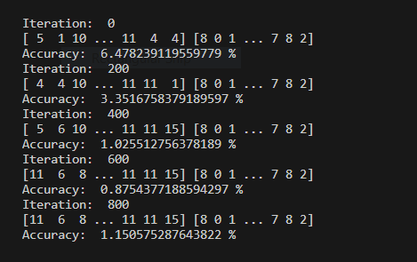

03-December-2023
Two months ago, I was working on a simple Neural Network project with the standard MNIST Dataset, which almost had an accuracy of 90%. That Neural Network had 784 input neurons in the form of each pixel, 1 hidden layer with 10 neurons and 10 output neurons. I also wrote about that.
Let's Experiement
Because I made that Neural Network mostly by copying someone else's code and trying to understand it, I thought trying a few different things with it would be a good idea. One of those few different things was to attempt to expand this Neural Network.
So the plan was to have the same number of Input and Output Neurons and 2 hidden layers with 16 Neurons each. And that's what I did… at least attempted to do.
Initializing the Weights and Biases.
def init_parameters ( ) :
weights_01 = np . random . rand ( 16 , 784 ) - 0.5
biases_01 = np . random . rand ( 16 , 1 ) - 0.5
weights_02 = np . random . rand ( 16 , 16 ) - 0.5
biases_02 = np . random . rand ( 16 , 1 ) - 0.5
weights_03 = np . random . rand ( 10 , 16 ) - 0.5
biases_03 = np . random . rand ( 10 , 1 ) - 0.5
return weights_01, biases_01, weights_02, biases_02, weights_03, biases_03
Forward Propagation Function.
def forward_propagation ( weights_01, biases_01, weights_02, biases_02, weights_03, biases_03, x) :
z1 = weights_01. dot ( x) + biases_01
a1 = ReLU ( z1)
z2 = weights_02. dot ( a1) + biases_02
a2 = ReLU ( z2)
z3 = weights_03. dot ( a2) + biases_03
a3 = softmax ( z3)
return z1, a1, z2, a2, z3, a3
Backpropagation Function.
def back_propagation ( z1, a1, z2, a2, z3, a3, weights_01, weights_02, weights_03, x, y) :
one_hot_y = one_hot ( y)
dz3 = a3 - one_hot_y
dweights_03 = 1 / m * dz3. dot ( a2.T )
dbiases_03 = 1 / m * np . sum ( dz3)
dz2 = weights_03.T . dot ( dz3) * ReLU_derivative ( z2)
dweights_02 = 1 / m * dz2. dot ( a1.T )
dbiases_02 = 1 / m * np . sum ( dz2)
dz1 = weights_02.T . dot ( dz2) * ReLU_derivative ( z1)
dweights_01 = 1 / m * dz1. dot ( x.T )
dbiases_01 = 1 / m * np . sum ( dz1)
return dweights_01, dbiases_01, dweights_02, dbiases_02, dweights_03, dbiases_03
Parameters Updating Function.
def update_parameters ( weights_01, biases_01, weights_02, biases_02, weights_03, biases_03, dweights_01, dbiases_01, dweights_02, dbiases_02, dweights_03, dbiases_03, alpha) :
weights_01 = weights_01 - ( dweights_01 * alpha)
biases_01 = biases_01 - ( dbiases_01 * alpha)
weights_02 = weights_02 - ( dweights_02 * alpha)
biases_02 = biases_02 - ( dbiases_02 * alpha)
weights_03 = weights_03 - ( dweights_03 * alpha)
biases_03 = biases_03 - ( dbiases_03 * alpha)
return weights_01, biases_01, weights_02, biases_02, weights_03, biases_03
Activation Functions, ReLU Derivative, one hot encoding, and functions to get accuracy are supposed to remain the same.
Now all of the functions needed can be used to train our Neural Network.
weights_01, biases_01, weights_02, biases_02, weights_03, biases_03 = init_parameters ( )
for i in range ( iterations) :
z1, a1, z2, a2, z3, a3 = forward_propagation ( weights_01, biases_01, weights_02, biases_02, weights_03, biases_03, x)
dweights_01, dbiases_01, dweights_02, dbiases_02, dweights_03, dbiases_03 = back_propagation ( z1, a1, z2, a2, z3, a3, weights_01, weights_02, weights_03, x, y)
weights_01, biases_01, weights_02, biases_02, weights_03, biases_03 = update_parameters ( weights_01, biases_01, weights_02, biases_02, weights_03, biases_03, dweights_01, dbiases_01, dweights_02, dbiases_02, dweights_03, dbiases_03, alpha)
if i % 200 == 0 :
print ( "Iteration: " , i)
print ( "Accuracy: " , get_accuracy ( get_predictions ( a2) , Y_train) * 100 , "%" )
Something that's left now is to run the program and see at what accuracy this Neural Network peaks. And, hit Run.
So the problem here is that instead of accuracy going up, it just randomly fluctuates around without gradually increasing.
I tried to analyze the code and try to find where I made the mistake. Eventually, I decided to look for the solution over to a magical place, yes I am talking about the Internet. After scrolling through a bunch of pages and source code, I got more confused rather than finding a solution. I still haven't found a solution to it.
I have just changed its private repository into a public repository, so you can also have a look at it if you still find the problem unsolved and you have the answer, I would be thankful to you for having to learn from you.